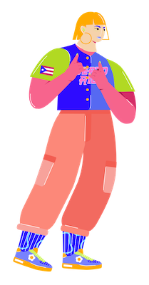

Cover your page.
Salut ! Moi c'est Zoé OSMANI
Je suis actuellement étudiante à ESICAD en deuxième année de BTS SIO option SLAM, une filière qui forme aux métiers du développement informatique.
Vous retrouverez ici mon portfolio, contenant les projets sur lesquels j'ai pu travailler ces deux dernières années, ainsi que mon CV.
Je suis ravie de partager avec vous mes réalisations et mon parcours professionnel.
N'hésitez pas à me contacter pour toute collaboration ou projet. Je suis impatiente de partager ma passion avec vous et de créer quelque chose d'extraordinaire ensemble !
Le BTS SIO ? Mais c'est quoi ?
Le BTS SIO (Services Informatiques aux Organisations) est une formation spécialisée dans les domaines de l'informatique et des systèmes d'information.
Il offre deux spécialités : SISR (Solutions d'Infrastructure, Systèmes et Réseaux) et SLAM (Solutions Logicielles et Applications Métier).
La spécialité SISR forme des professionnels compétents dans la gestion des infrastructures informatiques, la sécurité des réseaux et la maintenance des systèmes.
La spécialité SLAM, quant à elle, prépare les étudiants aux métiers du développement logiciel, de la programmation et de la conception d'applications métier.
Ces deux spécialités offrent aux étudiants une formation complète et adaptée aux besoins du marché du travail en matière d'informatique et de systèmes d'information.
